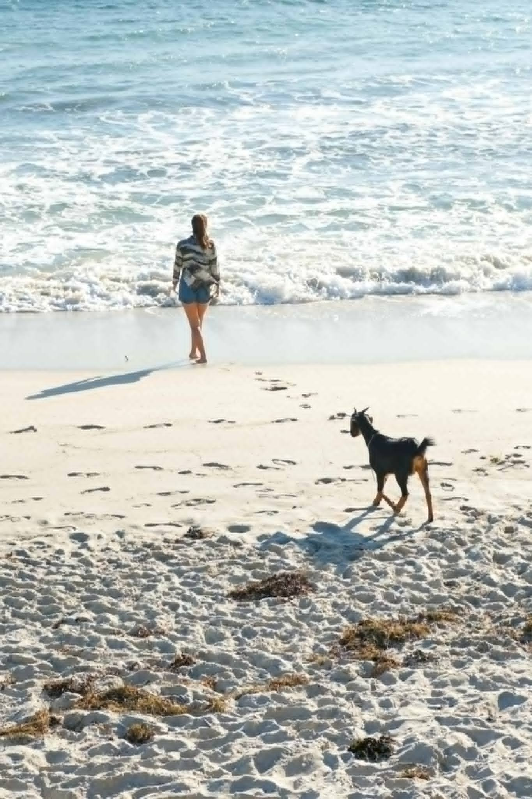
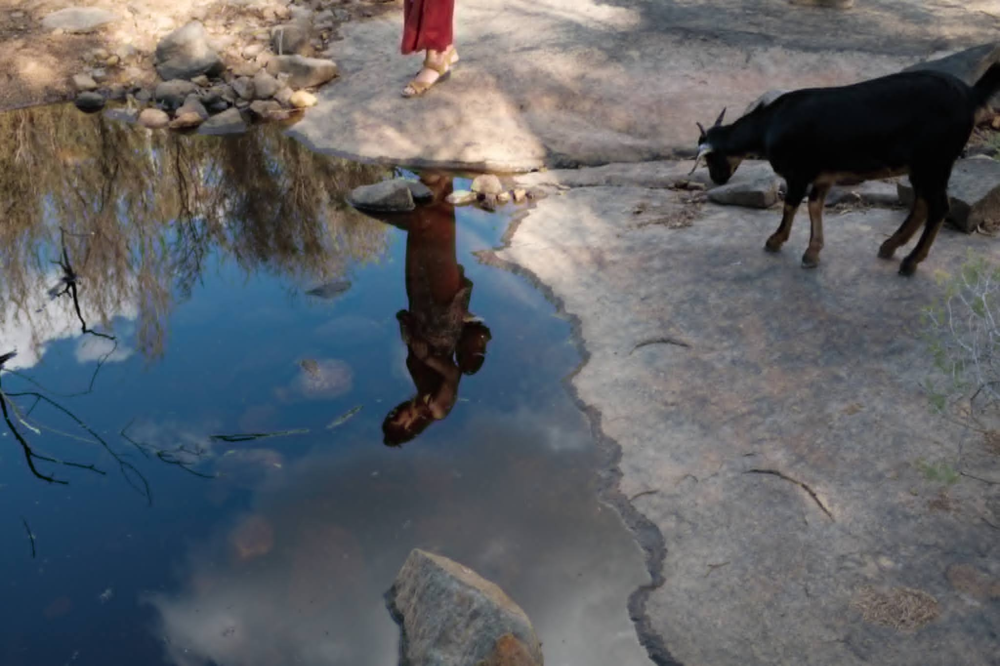
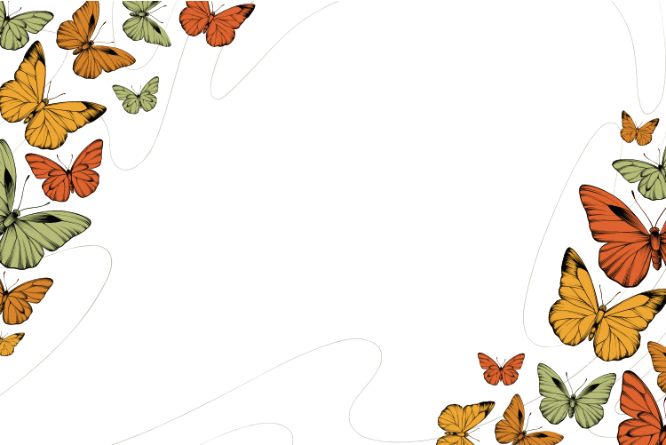

Qui suis-je
Un carnet, des routes, des animaux
Les animaux sont ma boussole.
Je m'appelle Elisabeth — Babeth pour les animaux et leurs humains. Soigneuse animalière, conseillère en nutrition et comportement, architecte d'intérieur de formation.
Mais avant tout ça, il y a une histoire. Elle tient dans ce carnet. Elle commence loin d'ici.


I. L'Australie
La poussière rouge m'a tout appris
À dix-neuf ans, je suis partie travailler dans les cattle stations du Territoire du Nord. Des milliers de bêtes, des journées qui commencent avant le soleil, la poussière rouge partout.
C'est là que j'ai appris à écouter ce que les animaux disent sans parler. Un veau qui colle sa tête contre la vôtre pendant que vous jouez de l'ukulélé — ça ne s'oublie pas.


Gagner la confiance de ceux que la vie n'a pas épargnés.
II. Les Balkans
Soigner avec presque rien
Plus tard, les Balkans. Des refuges débordés, des chiens des rues par centaines, des moyens minuscules.
J'y ai appris l'autre versant du métier : soigner avec presque rien, et gagner la confiance d'animaux que la vie n'avait pas épargnés. Sans jugement — il n'y a pas de mauvais humain ici, et pas de mauvais chien non plus.



III. Les dauphins
Certains moments ne s'expliquent pas
Un matin, en kayak, des dauphins sont venus nager autour de moi. Longtemps. Sans raison.
Certains moments ne s'expliquent pas. Ils orientent.



IV. Mémé & la chèvre
La tendresse n'a pas d'espèce
Et puis il y a eu la chèvre anglo-nubienne. Elle me suivait partout — sur les rochers du bush, jusqu'au bord de l'océan, jusque dans mon reflet au bord des rivières.
Elle m'a appris l'absurde, la fidélité, le vivant qui déborde. La tendresse n'a pas d'espèce.


Des lieux beaux pour les humains, justes pour les animaux.
V. Le Fanal Des Chats
Le métier est devenu sérieux
De retour à Bruxelles, j'ai passé deux ans au Fanal Des Chats, un refuge félin. Soins quotidiens, sevrages, convalescences, adoptions : c'est là que le métier est devenu rigueur, observation, responsabilité.
Entre-temps, un diplôme d'architecture d'intérieur. Longtemps, j'ai cru que c'était une autre vie. Puis j'ai compris : nos maisons sont les territoires de nos animaux. Les penser pour eux aussi, c'est le même métier.


VI. Aujourd'hui
Le sanctuaire grandit, doucement
Aujourd'hui, je vis à Bruxelles avec mes quatre chats. J'accompagne les humains et leurs animaux : nutrition, comportement, garde et soins, aménagement.
Le carnet reste ouvert — il y aura d'autres routes, d'autres rencontres. Mais le cap ne change pas.
Avec les animaux, je suis partout chez moi.
Ils en parlent
Ceux qui partagent leur vie avec eux
 Lea & Mousse
Lea & Mousse
Babeth a compris Mousse en une visite. Trois semaines plus tard, il dormait enfin la nuit — et nous aussi.
 Nour & Praline
Nour & Praline
On pensait devoir choisir entre un bel appartement et une chatte heureuse. On a les deux.

La suite s'écrit avec vous
On fait le chemin ensemble ?
Votre animal a son histoire aussi. Parlons-en — à domicile, à Bruxelles et alentours, ou en visio.